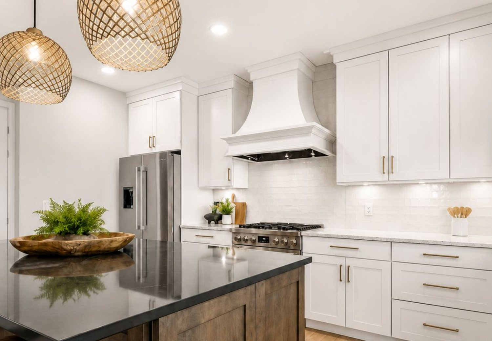

REALTOR® · Keller Williams Realty Sioux Falls
Marcos Diaz
Su hogar. Su camino. Nuestro compromiso.
o llame / envíe texto al 605-838-9140
Se habla español
Ayudo a personas y familias en Sioux Falls a comprar, vender y construir patrimonio a largo plazo a través de los bienes raíces, con asesoría honesta y defensa firme de sus intereses en cada paso.
Sobre mí
Disciplina, honestidad y compromiso de servir a los demás.
Soy Marcos Diaz, agente de bienes raíces (Realtor) con Keller Williams Realty, dedicado a servir a personas y familias en Sioux Falls y sus alrededores.
Mi experiencia en el servicio militar formó mi disciplina, mi ética de trabajo y mi compromiso de servir a los demás.
Me apasiona ayudar a mis clientes a construir patrimonio a través de los bienes raíces, con asesoría honesta y defendiendo sus intereses en cada paso.
Hablo español e inglés con fluidez, y me enorgullece ayudar a una comunidad diversa a lograr ser dueña de su casa y a crecer financieramente a largo plazo.
- La comunicación es primero. Siempre sabrá cómo va su proceso, y respondo rápido.
- Conocimiento del mercado local. Al día en tendencias, precios y oportunidades en Sioux Falls.
- Enfocado en usted. Sus metas guían cada recomendación y cada decisión.
Cómo le ayudo
Mucho más que encontrar una casa.
Comprar una casa
Un plan claro desde la preaprobación hasta las llaves, con alguien de su lado en cada paso.

Vender su casa
Precio basado en datos, buena preparación y negociación firme para lograr el mejor resultado.
Búsqueda fuera del mercado
Cuando el MLS no tiene la casa ideal, voy más allá y contacto directamente a los dueños.
Mudanza fácil
Uso gratis de nuestro tráiler de mudanza para mis compradores, cuando lo necesite.
Búsqueda fuera del mercado
La casa que busca quizás no está a la venta.
Si no la encontramos, salimos a buscarla.
- 01
Definimos lo que necesita
Ubicación, precio, distribución, características y el estilo de vida que busca.
- 02
Buscamos más allá del MLS
Contacto directamente a los dueños y exploro oportunidades que no se anuncian públicamente.
- 03
Creamos oportunidades
Contacto dirigido y conversaciones directas para encontrar casas que le convengan, aunque no estén a la venta.
- 04
Negocio y le guío
Le ayudo a evaluar la propiedad, entender los términos y llegar desde la primera conversación hasta el cierre.
Resultados
Resultados en Sioux Falls.
Especializado en compradores de primera vivienda, familias militares y programas para veteranos, inversiones, construcción nueva y casas de lujo.
- 13
- Ventas cerradas
- $3.8M
- Valor total
- $291K
- Precio promedio
- $195K–$560K
- Rango de precios
Ventas recientes
- 2500 N Lyme Grass Ave, Sioux Falls$300,000
- 4809 S Klein Ave, Sioux Falls$298,000
- 3809 S Home Plate Ave, Sioux Falls$560,000
- 4404 E Steeple Cir, Sioux Falls$370,000
- 1109 4th St, Garretson$317,500
- 7405 W 51st St, Sioux Falls$290,000
Zonas atendidas
- Suroeste de Sioux Falls
- Sureste de Sioux Falls
- Whittier
- Lado Este
- Pepper Ridge
- Noroeste de Sioux Falls
- Garretson
Datos de ventas: Homes.com, últimos cinco años.
Reporte del mercado · septiembre 2026
¿Cómo está el mercado en Sioux Falls?
- $344.6K
- Precio mediano · +1.8%
- 219
- Casas vendidas · +15.9%
- 3.8
- Meses de inventario
Reseñas de clientes
Lo que dicen mis clientes.
¿Trabajó conmigo? Deje una reseña
Buscar casas
Vea todas las casas en venta en Sioux Falls.
Explore las propiedades del MLS en tiempo real, guarde sus favoritas y reciba alertas cuando salgan casas nuevas.
Guía para compradores
Lo que debe saber antes de comprar.
Comprar una casa es una gran decisión. Esto es lo que reviso con cada cliente antes de empezar, y lo que puede esperar una vez que tenga contrato.
Pregúnteme lo que sea Mi Guía para Compradores gratis (PDF) →Puntos a considerar
Trabajo e ingresos
¿Tengo un trabajo e ingresos estables? ¿Voy a seguir en este tipo de trabajo? ¿Cuáles son mis gastos, ahorros y deudas?
Puntaje de crédito
Por lo general se requiere un puntaje de crédito de 620 para préstamos convencionales, mientras que los préstamos FHA tienen más flexibilidad según el pago inicial.
Pago inicial (enganche)
Según el tipo de préstamo, el pago inicial puede ir del 0% al 20% del precio de compra.
Costos de cierre
Los costos de cierre van del 2% al 6% del monto del préstamo. Otros gastos incluyen la inspección y el avalúo.
Planes a largo plazo
¿Pienso quedarme en esta zona? ¿Espero cambios importantes en mi vida? Piense en cómo pueden cambiar su carrera, su familia y su estilo de vida con el tiempo.
Gastos continuos
Su presupuesto debe incluir el pago mensual de la hipoteca, los impuestos a la propiedad, el seguro de la casa y el mantenimiento (aproximadamente del 1% al 2% del precio de compra al año).
El proceso de cierre
1Depósito en garantía (escrow)
El comprador deposita el dinero de garantía (earnest money) en una cuenta neutral, que guarda los fondos hasta que se completa la transacción.
2Inspecciones
El comprador pide una inspección para asegurarse de que la propiedad no tenga problemas importantes.
3Aprobación del préstamo y avalúo
El prestamista pide un avalúo para confirmar que el valor de la casa iguala o supera el precio de compra, y luego aprueba la hipoteca del comprador.
4Recorrido final
Antes del cierre, el comprador hace un último recorrido para confirmar que la propiedad está en las condiciones esperadas.
5Día del cierre
Comprador y vendedor firman los documentos. El comprador paga los costos de cierre, recibe las llaves y toma posesión, y el vendedor recibe el dinero de la venta.
6Empacar y mudarse
Comience a empacar y a planear la mudanza. ¡Felicidades!
Calculadora de hipoteca
Calcule su pago mensual.
Los números son solo de ejemplo. Use la tasa que le cotice su prestamista y verifique los impuestos de la casa específica. Este cálculo no incluye el seguro hipotecario (PMI) y no es una oferta de préstamo.
Pago mensual estimado
$0
- Capital e intereses
- $0
- Impuesto predial
- $0
- Seguro de la casa
- $0
- HOA
- $0
- Pago inicial
- $0
- Monto del préstamo
- $0

Obtenga su preaprobación
Gisselle Perez
Asesora de préstamos hipotecarios · CharterWest Bank Mortgage Center · NMLS #2840295
Bilingüe: español e inglés
605-250-7967 · gperez@charterwest.com
Solicitar en líneaMarcos Diaz y Keller Williams no son prestamistas. Usted puede escoger cualquier prestamista. Préstamos ofrecidos por CharterWest Bank, NMLS #466077, Prestamista de Igualdad de Vivienda. Sujeto a aprobación de crédito.
Guía para vendedores
Venda con un plan, no adivinando.
Vender su casa es mucho más que poner un letrero en el jardín. Así le ayudo a ponerle el precio correcto, prepararla bien y venderla en sus términos.
¿Cuánto vale mi casa? Calcular cuánto me queda → Mi Guía para Vendedores gratis (PDF) →Antes de poner su casa en venta
El precio correcto
El precio es lo que más influye en qué tan rápido y en cuánto se vende su casa. Preparo un análisis comparativo del mercado con ventas recientes, la competencia activa y la demanda actual en su vecindario, para que su precio se base en datos y no en suposiciones.
Preparar su casa
Pequeñas mejoras hacen una gran diferencia: despejar espacios, limpiar a fondo, pintar y hacer reparaciones sencillas ayuda a que los compradores se imaginen viviendo ahí. Recorro la casa con usted y le digo qué vale la pena hacer y qué no.
El momento de vender
Cuándo pone su casa en venta importa. Revisamos el mercado, su próximo paso y sus tiempos para elegir el mejor momento, y planeamos cómo coordinar la venta con la compra de su siguiente casa si va a hacer ambas.
Cuánto le quedará
Antes de publicar, le ayudo a calcular cuánto recibirá revisando el saldo de su hipoteca, los costos de cierre y otros gastos de venta, para que no haya sorpresas al cierre.
Declaraciones
En Dakota del Sur, los vendedores deben llenar una declaración sobre las condiciones de la propiedad. Le guío para que la complete con precisión y con confianza en lo que comparte con los compradores.
El proceso de venta
1Consulta y precio
Nos reunimos, hablamos de sus metas y tiempos, recorremos la casa y definimos juntos la estrategia de precio.
2Preparación y fotos
Preparamos su casa para el mercado y luego fotos profesionales la muestran en su mejor momento.
3Publicación y promoción
Su casa se publica en el MLS y en los principales sitios de búsqueda, con promoción para llegar a los compradores indicados.
4Visitas y casas abiertas
Los compradores visitan su casa. Le mantengo al tanto del interés y los comentarios después de cada visita.
5Ofertas y negociación
Reviso cada oferta con usted, incluyendo precio, términos, condiciones y plazos, y negocio para conseguirle el mejor trato.
6Bajo contrato
El comprador hace las inspecciones y el prestamista pide un avalúo. Yo me encargo de cualquier solicitud de reparación o negociación que surja.
7Día del cierre
Firma los documentos finales, entrega las llaves y recibe el dinero de la venta. ¡Felicidades!
Áreas que atiendo
Encuentre su lugar en el Sioux Empire.
¿Se muda a Sioux Falls? Reciba mi guía gratis para mudarse: servicios, licencia y placas, escuelas y lo mejor de la ciudad.
Recibir la guía gratisMudanza fácil
Su próxima etapa, más fácil.
Mudarse puede ser estresante. Para ayudarle, mis compradores pueden usar gratis nuestro tráiler cerrado, ideal para cajas, muebles, electrodomésticos o equipo de jardín.
- Gratis para compradores
- Resérvelo por un día, un fin de semana o más
- Una forma más de apoyarle, antes, durante y después del cierre
Preguntas frecuentes
Respuestas rápidas.
¿Trabaja con compradores y vendedores que hablan español?
Sí. Soy bilingüe y le puedo guiar en todo el proceso en español o en inglés, desde la primera llamada hasta el día del cierre.
¿Cuánto necesito para el pago inicial en Sioux Falls?
Menos de lo que mucha gente cree. Algunos préstamos piden de 3% a 3.5% de pago inicial, los préstamos VA pueden ser con $0 para veteranos que califiquen, y South Dakota Housing tiene programas que ayudan con el pago inicial a quienes compran su primera casa. Un prestamista le puede decir exactamente para qué califica. Sobre Give Me Five →
¿Debo obtener una preaprobación antes de ver casas?
Sí. La preaprobación le dice cuánto puede gastar y le muestra al vendedor que usted va en serio. Cuando hay competencia, las ofertas sin preaprobación muchas veces no se toman en cuenta.
¿Cómo se le paga al agente del comprador?
Hoy en día el comprador firma un acuerdo por escrito con su agente antes de ver casas, y ahí se explica cómo se le paga. Muchas veces el vendedor termina cubriendo parte o todo, pero es negociable. Le explico sus opciones antes de empezar.
¿Cuánto tiempo toma comprar una casa?
Encontrar la casa indicada puede tomar unos días o unos meses. Una vez aceptada su oferta, el cierre suele tomar de 30 a 45 días, según su préstamo.
¿Cómo sé cuánto vale mi casa?
Los cálculos en línea pueden fallar mucho. Pida un reporte gratis y comparo su casa con ventas reales y recientes cerca de usted. Recibir mi reporte →
¿En qué áreas trabaja?
Todo Sioux Falls, además de Tea, Harrisburg, Brandon, Garretson, Hartford, Crooks, Lennox, Canton y comunidades cercanas en los condados de Minnehaha y Lincoln.
¿Ayuda a veteranos y familias militares?
Sí. Trabajo con familias militares y veteranos y le ayudo a usar su beneficio de préstamo VA, incluidas opciones con $0 de pago inicial para quienes califiquen. Leer la guía VA →
Hablemos
Listo cuando usted lo esté.
Conteste unas preguntas rápidas y me comunicaré con usted personalmente, por lo general el mismo día. ¿Prefiere hablar ahora? Llame o envíe un texto.